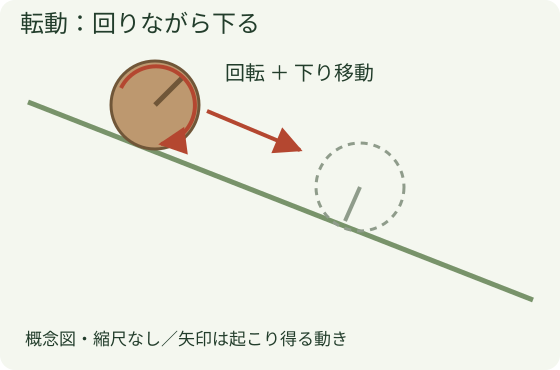
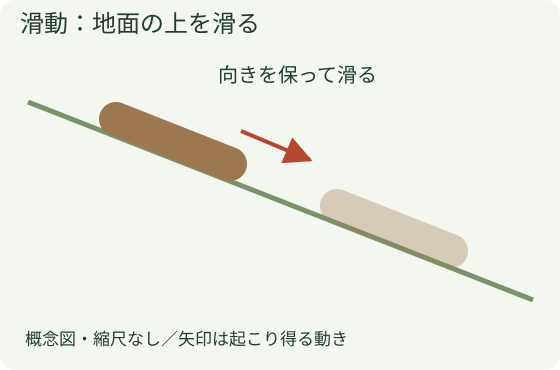
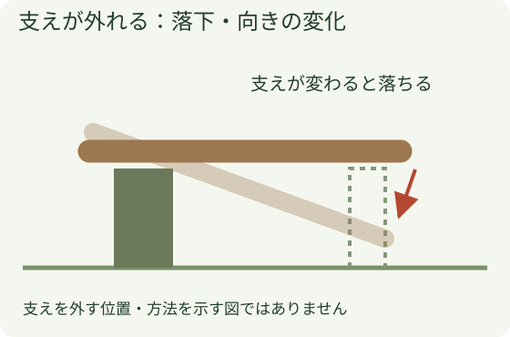
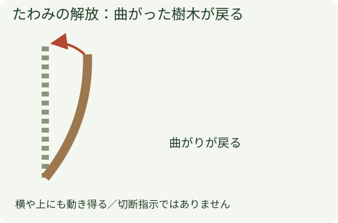

斜面と切った樹木の動き
切った樹木は、地面に着いても止まったとは限りません。何に支えられているか、支えが変わるとどこが動くかを見ます。
1 転がる

丸い幹は回りながら下ることがあります。枝、石、切株に当たると向きが変わったり、跳ねたりする場合もあります。
2 滑る

回転せずに斜面を滑る動きです。転動と滑動が途中で入れ替わる場合もあり、最初の動きだけで先を決めません。
3 支えを失う

枝に乗っている、切株に掛かっている状態は、地面に全面で載っている状態とは違います。片付ける枝が、別の樹木を支えていることもあります。
4 たわみが戻る

押し曲げられた樹木や枝には、元の形へ戻ろうとする力が残ります。支えや掛かりが変わると、横・上方向にも動く場合があります。
5 片付ける前の見る点
①幹の両端はどこか、②地面・枝・切株のどこが支えているか、③別の樹木と絡んでいないか、④斜面の先に道路や人がいないかを、近づく前に確認します。止まって見えることと、安定していることを分けます。
立入・安定化・取り扱う順序が不明なら責任者へ伝えます。「山側なら必ず安全」など、一つの位置を万能な安全地帯にしません。図の矢印は退避方向や切断位置の指定ではありません。
6 この章から決めないこと
かかり木、風倒木、強く曲がった樹木の切断方法、ワイヤーを掛ける場所、張力、持出方法は別の作業計画と実地教育が必要です。動きを学ぶ図から、支えを取り除く操作を選びません。
出典と適用範囲
- 林野庁：災害事例 — PDF1–2・6頁、衝突後の反動、支持木のたわみ、滑動・転動の観察。事故の切削対策は流用していません。
- Husqvarna：風倒木の取り扱い — 張力が解放されたときの大きな動きの説明。切断手順はこの基礎章へ採用していません。
2026年10月25日確認。図は独自作成です。掲載写真は受領済みの会社写真に限り、原典の図・写真は転載していません。